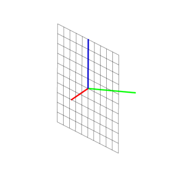
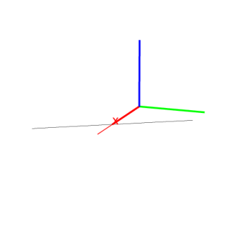

14.5.7 Planes orthogonal to lines and lines orthogonal to planes in space: orthogonal
The orthogonal command finds orthogonal objects. It takes
its arguments in different ways, and returns and draws a line or plane,
depending on the arguments.
A point and a line.
-
orthogonal takes two arguments:
- orthogonal(P,L) returns and draws the plane through
P orthogonal to L.
Example
Input:
orthogonal(point(0,0,0),line(point(1,0,0),point(0,1,0)))
Output:

A line and a plane.
-
orthogonal takes two arguments:
- orthogonal(L,P) returns and draws the plane
containing L that is perpendicular to P.
Example
Input:
| perpendicular(line(point(0,0,0),point(1,1,0)), |
| plane(point(1,0,0),point(0,1,0),point(0,0,1)))
|
Output:
